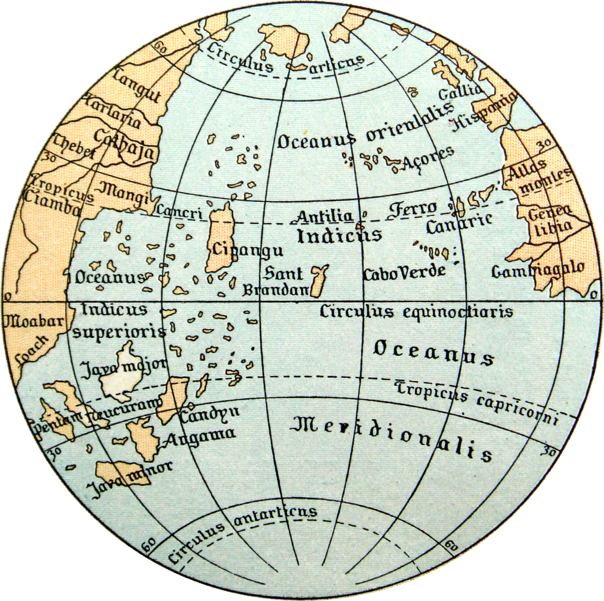

1- Introdução¶

Antelóquio¶
Antelóquio é o que se diz ou escreve antes; uma apresentação, um preâmbulo, um prólogo.
Todas as notas desse material foram baseadas nas aulas de 2019 (ACESSE) do curso do Prof. Richard McElreath e também em seu livro (capa acima) Statistical Rethinking - Segunda Edição.
Escrevi esse material como o intuíto de construir um estudo estruturado que me permita uma boa compreensão das aulas do curso e, por consequência, melhor as habilidades em programação e exposição de idéias.
Esse material foi construído tentando preservar os detalhes didáticos que julguei serem mais importantes e, também, as construções dos modelos na medida do possível utilizando Python, permitindo assim um entendimento mais concreto do que está acontencendo.
Diferenças do material original do curso: esse material foi construído transportando as idéias codificadas em R do pacote rethinking para a linguagem python em conjunto com suas principais bibliotecas de análise de dados (numpy, scipy, matplotlib) e no lugar do pacote rethinking usei, tanto quanto meu conhecimento me permitiu, utilização da biblioteca Stan e sua interface para python pystan.
Esse material foi escrtio em lingua portuguesa (Brasil).
Estará disponibilizado gratuitamente no github: https://github.com/rodolphomacedo.
Erros, sugestões ou dúvidas podem ser enviadas para o email rodolpho.ime@gmail.com
Bons estudos!!!
Prefácio¶
O prefácio é um breve texto preliminar de apresentação, colocado no começo do livro, com explicações sobre os objetivos.
Esse material tem como objetivo primário descrever um modo de (re)pensar a estatística. Para uma primeira leitura não é necessário um foco mais atento dos códigos que geram os gráficos, porém o próprio código e os comentários são partes integrantes do método que usei para apresentar as ideias e muitas dúvidas podem ser sanadas com uma leitura mais atenta.
Tentei colocar o máximo de figuras e memes que pude encontrar para ilustrar os exemplos, muitos deles foram os mesmos que foram usados nas apresentações do curso.
Requisitos¶
É necessário um breve conhecimento da teoria das probabilidades e as técnicas básicas de contagem. Uma vivência razoável em python e suas bibliotecas mais usuais de análise de dados.
Golem de Praga¶
{kind=link}
Statistical Rethinking Winter 2019 Lecture 01 - Golem de Praga
Golem é um ser artificial místico. Geralmente associado à tradição mística do judaísmo, particularmente à cabala, que pode ser trazido à vida através de um processo divino. No folclore judaico, o golem é um ser animado que é feito de material inanimado, muitas vezes visto como um gigante de pedra.
Um Golem pode ser entendido como robô que obedece as ordens do seu criador, porém eles não possuem nenhum compromisso com a verdade, deixando assim a cargo do seu criador avaliar e criticar suas ações à luz da racionalidade.
Nesse material vamos é aprender a construir golems bayesianos.
Medidas das ideias¶
Um cientista, em um sentido mais amplo, refere-se a qualquer pessoa que exerça uma atividade sistemática para obter conhecimento sobre algo. Em um sentido mais restrito, cientista refere-se a indivíduos que usam o método científicos.
Todos nós precisamos construir inferências sobre aspectos de ao menos uma parcela de particularidades de um problema que está sobre estudo.
Medir a Natureza é fascinante! Tal medida nos permite um entendimento aproximado de um subconjunto do funcionamento da maquinaria natural do Todo.
Ao se observar o fenômeno a ser estudado, a proposta da criação de uma métrica surge a partir de uma ideia, uma sugestão, uma proposta, que se admite, independentemente do fato de ser verdadeira ou falsa, como um princípio a partir do qual se pode deduzir um determinado conjunto de consequências.
Note
Tal ideia a definiremos como uma hipótese.
Para conseguirmos saber se a hipótese é verdadeira é necessário utilizarmos um método confiável. Esse método é a realização de uma operação intelectual, por meio da qual se afirma a verdade da hipótese em decorrência de sua ligação com outras já reconhecidas como verdadeiras, isto é, uma inferência.
Problemas de escopo aberto¶
Os problemas de escopo aberto apresentam dificuldades relativamente grandes e que desafiam a nossa capacidade de encontrar uma solução.
Tais problemas guardam em si a particularidade de serem difíceis de obter um pouco de conhecimento a seu respeito.
Complementar com LAPLACE Ensaio Filosóficos sobre as probabilidades. “sobre a probablidade. pg. 42
A estrutura estatística sugerida pelo biólogo Ronald Fisher, no início da década de 20, não contém em seu propósito a capacidade de resolver problemas de caráter tão amplo. (ver complementar com SHARON, capítulo3 em Fisher - A teoria que não morreria)
Tais técnicas propostas, e estudadas ainda hoje, podem ser vistas como pequenos robôs que precisam de uma entrada e produzem uma saída agnóstica a seu propósito. Robôs de modo geral são assim, são bons para realizar tarefas que supram a necessidade humana.
A estrutura de testes estatísticos proposta por Fischer pode ser estruturada hoje em dia usando flowcharts. Abaixo temos um exemplo de como essa estrutura pode ser visualizada.

O ambiente de estudo é, de modo geral, extremamente confuso para conseguirmos completamente. Ao londo desse material iremos entender mais a fundo essa complexidade.
Assim, naturalmente, nasce uma necessidade da construção de uma estrutura que nos permitirá obter, ao menos, alguns pontos de sabedoria desse ambiente.
Falha da Falsificação¶
Karl Popper, um dos mais conhecidos filósofos da ciência, entra para a história por propor uma definição do que pode ser ciência e, também, o que ela não é, através da falsificação ou não.
Note
O critério de falsificação é a demarcação do que está acontecendo dentro e fora. Mas existem muitas outras coisas sobre o que foi evidenciado e, que por sua complexidade, exige que tenhamos mais de um modelo para verificar quais deles são consistentes com que observamos.
O que queremos é tentar falsificar um modelo explicativo e não qualquer outro modelo sem importância!
Agora no século \(XX\), isso foi revertido! Oque os cientistas tentam falsificar com seus testes estatísticos não são as suas hipóteses de pesquisa, mas algumas hipóteses que eles não gostam e que não está acontecendo nada.
(Obs: Pensar num exemplo sobre essa parte acima.)
O que deveríamos realmente fazer são as previsões sobre o que está acontecendo ali e falsificar todo o restante.
(Obs: Usar o mesmo exemplo sobre essa parte acima.)
Note
Assim, ciência não se trata de falsificar coisas, é necessário construir uma teoria substantiva em algum ponto.
O que Karl Popper propõe:¶
Note
Construa uma hipótese de pesquisa substantiva com previsões pontuais sobre o que deveria estar acontecendo e tente falsifica-lá.
E não falsificar a ideia boba em que não está acontecendo nada.
Porque sempre está acontecendo algo, essa é a Natureza!
Muitas coisas estão correlacionadas em muitos lugares na Natureza! Existe um emaranhado de coisas acontecendo, simultâneamente e interagindo entre si a todo momento.
Falsificar a ideia de que algo não está acontecendo algo ali é como olhar para cima para tomar a decisão de atravessar uma rua, ao invés de olhar para ambos os lados.
Mas a questão principal é:
Note
Como prever essa estrutura?
Modelos nulos não são únicos!
Deveria falsificar o modelo explanatório, e não o modelo nulo (\(h_0\)).
A falsificação é consensual, não lógica!
Falseabilidade é sobre a demarcação e não sobre o método.
Não existe um procedimento estatístico suficiente.
Note
A ciência é uma tecnologia social!
Engeharia de Golem¶
Para o desenvolvimento dos golem’s bayesianos vamos precisar de um conjunto de princípios para que possamos construir nossos modelo estatístico. Não vamos entrar nesse curso achando que é apenas uma escolha de golem de dentro de uma caixa de ferramentas com vários golems pré-fabricados, ou algum flowchart de técnicas quaisquer.
Iremos aprender a construir os nossos próprios golems e também aprenderemos os princípios para conseguirmos criticá-los e refiná-los.
Existem muitos modos de fazermos as escolhas desses principíos que estão sob os diversos direcionamentos da filosofia que escolhermos trabalhar!
Nós iremos seguir esses três principios:
Análise de dados Bayesiana
Modelos multi-níveis
Comparação de modelos
Análise de Dados Bayesiana¶
Contar todas as maneiras que as coisas podem acontecer, de acordo com nossa suposição.
As suposições que são mais consistentes com os dados, ou seja, as que ocorrem mais vezes, são mais plausíveis de acontecerem.
Note
Logo faremos algumas suposições sobre como o mundo poderá ser e, também, como o processo casual acontece. Então iremos ver algumas observações que são consequências desse processo.
Assim, podemos dizer que temos um conjunto de suposições alternativas, e cada uma dessas suposições são mais ou menos plausíveis de ocorrer de acordo com quantidade de vezes que ela já ocorreu anteriormente.
Isso é, na verdade, uma forma muito específica de contar coisas. Isso é o que o nossos Golem's irão fazer, contar coisas, mas de um modo MUITO rápido!
Nós precisamos apenas programá-los, para que ele conte as coisas que nós quisermos.
Modelos Multiníveis¶
Modelos com multiplos níveis de incerteza:
Troque os parâmetros por modelos
Casos comuns de uso:
Amostragem repetida e desbalanceada
Estudo da variação
Evitar a média.
Filogenética, fator e análises, networks, modelos espaciais.
Estratégia Bayesiana Natural:
Estratégia natural para a construção desses modelos.
Comparação de modelos¶
Temos que ter múltiplos modelos para podermos compará-los e saber o que está acontecendo,
e não falsificar uma hipótese nula. Estamos comparando o significado dos modelos.Problemas básicos:
Overfitting
Inferência Casual (Para descobrir alguma rede de causas e efeitos, pensar em uma rede de mediação).
Navalha de Ocam é bobagem:
Teoria da Informação é menos bobagem:
AIC, WAIC, cross-validation…
Devemos distinguir a predicação da inferência:
O Erro de Colombo¶
Cristóvão de Colombo foi um navegador e explorador genovês, responsável por liderar a frotas Marítimas sob as ordens dos Reis Católicos de Espanha.
Colombo, empreendeu a sua viagem através do Oceano Atlântico com o objetivo de atingir a Índia, tendo na realidade descoberto as ilhas das Caraíbas (as Antilhas) e, mais tarde, a costa do Golfo do México na América Central.
Em \(12\) de Outubro de \(1492\) Colombo alcança o continente americano. Esse episódio histórico é conhecido hoje como o descobrimento da América. \(^1\)
Porém, enquanto navegava, sempre enxergava quais as melhores direções que ele poderia seguir guiando-se apenas por seu mapa.
Essa é uma réplica do mapa que Colombo utilizou nessa viagem histórica:
{kind=link}
Cadê a América?
Behain Globe: Globo que Colombo usou viajando em direção as Américas.
\(^1\)Cristóvão de Colombo - Wikipedia
O mapa não é o mundo real, é apenas uma representação, uma hipótese, do que ele pode ser. O mundo real é sempre muito maior e bem mais complexo.
Nós, enquanto estamos construindo um modelo, estamos nos guiando por um mapa lógico mental. Esse mapa também não é o mundo real, é apenas uma representação, uma hipótese, ou ainda uma sugestão particular, do que o mundo pode ser.
Note
O mundo real é sempre bem maior e bem mais complexo do que se possa parecer!
Sensu L.J. Savage (1954)¶
Pequeno Mundo: Esse é o mundo das suposições dos Golems. Golems bayesianos são ótimos em um mundo pequeno.
Mundo Real: Não existe a garantia de otimalidade para qualquer tipo de Golem.
Temos que nos preocupar com ambos!
Quem foi Savage?:
O economista Milton Friedman disse que Savage foi “…uma das poucas pessoas que conheci a quem sem hesitar chamaria de gênio.”
Durante a Segunda Guerra Mundial, Savage serviu como principal
assistente estatístico de John von Neumann.
Jardim das Bifurcações dos Dados¶
Para entender com funciona máquina bayesiana, vamos introduzir um exemplo simples:
Temos uma bolsa com \(4\) bolas (\(N=4\)). Sabemos que só existem a bolas azuis (rotuladas de \(1\)) e bolas brancas (\(0\)).
O que queremos saber é:
Note
Quantas bolas de cada cor tem dentro da bolsa?
Vamos sortear as bolas e em seguida iremos devolver elas para a bolsa novamente.
Em três sorteios, tivemos o seguinte resultado:
ou ainda:
Vamos construir um procedimento para obter mais conhecimento a respeito de quais são as bolas que estão na bolsa.
A primeira coisa a se fazer é, listar todas as possíveis sugestões que podem acontecer, são elas :
(1) \([B, B, B, B]\)
(2) \([A, B, B, B]\)
(3) \([A, A, B, B]\)
(4) \([A, A, A, B]\)
(5) \([A, A, A, A]\)
As nossas 3 retiradas:
\([A, B, A] <=> [1, 0, 1]\)
Vamos calcular as coisas usando Python
import numpy as np
from scipy import stats
import matplotlib.pyplot as plt
# Definindo o plano de fundo cinza claro para todos os gráficos feitos no matplotlib
plt.rcParams['axes.facecolor'] = 'lightgray'
# Jardim da Bifurcações dos Dados
# ===================================
N = 4 # Quantidade de bolas na bolsa.
amostra = [1, 0, 1] # Nossas retiradas - [Azul, Branca, Azul].
A seguir será necessário breve conhecimento de técnicas de contagem. Uma ótima referência pode ser encontrar aqui Programa de Aperfeiçoamento para Professores de Matemática do Ensino Médio - Janeiro / 2004 Problemas de Contagem - Prof. Morgado
No curso é feito uma abordagem gráfica muito interessante. Assista para entende-lá!
Entenda a combinatória de um modo gráfico diretamente no curso, clique aqui para assistir!
# Contando quantas vezes cada hipótese pode ter ocorrido, dado nossa amostra.
# =============================================================================
plausibilidade_da_hipotese = {} # Inicializando um novo dicionário com as hipóteses propostas.
# ========= #
# AMOSTRA #
# ========= #
# A - B - A #
# ========= #
# | | |
plausibilidade_da_hipotese['B B B B'] = 0 # 0 * 4 * 0 = Todas brancas, nenhuma configuração é possível.
plausibilidade_da_hipotese['A B B B'] = 3 # 1 * 3 * 1 = 3 Maneiras distintas dessa configuração acontecer.
plausibilidade_da_hipotese['A A B B'] = 8 # 2 * 2 * 2 = 8 Maneiras distintas dessa configuração acontecer.
plausibilidade_da_hipotese['A A A B'] = 9 # 3 * 1 * 3 = 9 Maneiras distintas dessa configuração acontecer.
plausibilidade_da_hipotese['A A A A'] = 0 # 4 * 0 * 4 = Todas azuis, nenhuma configuração é possível.
Note
Esse é o cerne da estatística bayesiana, contagens. Apenas contagens!
Vamos, dessa vez, sortear mais uma bola… e, dessa vez, tiramos uma bola Azul:
Uma das várias coisas interessantes que podemos fazer é usar a contagem que fizemos anteriormente. Chamaremos essa contagem de contagem à priori, e então somamos com a contagem atual:
# Mais um novo sorteio de bolas na bolsa
# ========================================
# Contar a quantidade de maneiras que podemos tirar uma bola Azul para cada hipótese proposta,
# ou seja, para cada bolsa hipotética que pensamos.
nova_plausibilidade_da_hipotese = {} # Inicializando um novo dicionário com as novas hipóteses.
nova_plausibilidade_da_hipotese['B B B B'] = 0 # 0 = Nenhuma configuraçao possível
nova_plausibilidade_da_hipotese['A B B B'] = 1 # 1 Maneiras distintas dessa configuração acontecer.
nova_plausibilidade_da_hipotese['A A B B'] = 2 # 2 Maneiras distintas dessa configuração acontecer.
nova_plausibilidade_da_hipotese['A A A B'] = 3 # 3 Maneiras distintas dessa configuração acontecer.
nova_plausibilidade_da_hipotese['A A A A'] = 4 # 4 Maneiras distintas dessa configuração acontecer.
Assim teremos a contagem anterior (contagem à priori) multiplicada pela nova retirada da bola Azul.
# Atualizando a contagem com a nova informação (a nova bola Azul)
# =================================================================
# A multiplicação é apenas uma forma de somar as possibilidades de cada hipótese.
plausibilidade = {}
plausibilidade['B B B B'] = plausibilidade_da_hipotese['B B B B'] * nova_plausibilidade_da_hipotese['B B B B']
plausibilidade['A B B B'] = plausibilidade_da_hipotese['A B B B'] * nova_plausibilidade_da_hipotese['A B B B']
plausibilidade['A A B B'] = plausibilidade_da_hipotese['A A B B'] * nova_plausibilidade_da_hipotese['A A B B']
plausibilidade['A A A B'] = plausibilidade_da_hipotese['A A A B'] * nova_plausibilidade_da_hipotese['A A A B']
plausibilidade['A A A A'] = plausibilidade_da_hipotese['A A A A'] * nova_plausibilidade_da_hipotese['A A A A']
# O quão plausível é cada uma das bolsas hipotéticas, de acordo com a amostra observada.
# ========================================================================================
print('Número de manerias diferentes de conseguirmos obter essa amostra, dado a hipótese atual. \n')
print('Plausibildade da hipótese [B B B B] = ', plausibilidade['B B B B'], 'maneiras possíveis, dado a hipótese.')
print('Plausibildade da hipótese [A B B B] = ', plausibilidade['A B B B'], 'maneiras possíveis, dado a hipótese.')
print('Plausibildade da hipótese [A A B B] = ', plausibilidade['A A B B'], 'maneiras possíveis, dado a hipótese.')
print('Plausibildade da hipótese [A A A B] = ', plausibilidade['A A A B'], 'maneiras possíveis, dado a hipótese.')
print('Plausibildade da hipótese [A A A A] = ', plausibilidade['A A A A'], 'maneiras possíveis, dado a hipótese.')
Número de manerias diferentes de conseguirmos obter essa amostra, dado a hipótese atual.
Plausibildade da hipótese [B B B B] = 0 maneiras possíveis, dado a hipótese.
Plausibildade da hipótese [A B B B] = 3 maneiras possíveis, dado a hipótese.
Plausibildade da hipótese [A A B B] = 16 maneiras possíveis, dado a hipótese.
Plausibildade da hipótese [A A A B] = 27 maneiras possíveis, dado a hipótese.
Plausibildade da hipótese [A A A A] = 0 maneiras possíveis, dado a hipótese.
Adicionando Prioris¶
Ainda nesse exemplo, imagine que na fábrica que produz essas bolsas com as bolinhas dentro, um funcionário nos diga que:
Existem poucas bolinhas
Azuisem cada bolsa, e cada bolsa tem uma chance bem grande de ter uma bolinha Azul. Para nós conseguirmos transmitir essa intuição do funcionário sobre a quantidade de bolinhas que são mais prováveis em cada bolsa, podemos descrever os pesos mais viáveis.
Chamaremos essa nova informação de à priori. ou seja, é a informação de quantas bolas o funcionário acredita ter de cada cor na bolsa. Assim, para cada uma das nossas hipóteses, temos o quão plausível é ela acontecer.
Com essas informações, podemos multiplicar nossas contagens para cada uma das hipóteses.
# Inserindo a nossa informação a priori no nosso modelo.
# =======================================================
priori = {} # Inicializando um novo dicionário com as prioris.
priori['B B B B'] = 0
priori['A B B B'] = 3
priori['A A B B'] = 2
priori['A A A B'] = 1
priori['A A A A'] = 0
# Calculando a posteriori
# ==========================
nova_plausibilidade = {} # Inicializando um novo dicionário com as posterioris.
nova_plausibilidade['B B B B'] = priori['B B B B'] * plausibilidade['B B B B']
nova_plausibilidade['A B B B'] = priori['A B B B'] * plausibilidade['A B B B']
nova_plausibilidade['A A B B'] = priori['A A B B'] * plausibilidade['A A B B']
nova_plausibilidade['A A A B'] = priori['A A A B'] * plausibilidade['A A A B']
nova_plausibilidade['A A A A'] = priori['A A A A'] * plausibilidade['A A A A']
Com a nova informação, teremos novas plausabilidade para cada uma das hipóteses sugeridas.
# Mostrando, para cada uma das hipóteses, o quão plausível são as novas contagens.
# =================================================================================
print('='*85)
print('\n\t\tQuais bolsas são as mais prováveis, dado a amostra!\n')
print('-'*85)
print('\nNova plausibildade da hipótese [A B B B] = ', nova_plausibilidade['A B B B'], 'maneiras possíveis, dado a hipótese. \n')
print('Nova plausibildade da hipótese [A A B B] = ', nova_plausibilidade['A A B B'], 'maneiras possíveis, dado a hipótese. \n')
print('Nova plausibildade da hipótese [A A A B] = ', nova_plausibilidade['A A A B'], 'maneiras possíveis, dado a hipótese. \n')
print('Nova plausibildade da hipótese [A A A A] = ', nova_plausibilidade['A A A A'], 'maneiras possíveis, dado a hipótese. \n')
print('='*85)
=====================================================================================
Quais bolsas são as mais prováveis, dado a amostra!
-------------------------------------------------------------------------------------
Nova plausibildade da hipótese [A B B B] = 9 maneiras possíveis, dado a hipótese.
Nova plausibildade da hipótese [A A B B] = 32 maneiras possíveis, dado a hipótese.
Nova plausibildade da hipótese [A A A B] = 27 maneiras possíveis, dado a hipótese.
Nova plausibildade da hipótese [A A A A] = 0 maneiras possíveis, dado a hipótese.
=====================================================================================
Conclusão¶
Temos uma intuição lógica muito boa de qual das possíveis bolsas (ou sejas, quais as hipóteses) que sugerimos poderia ser a verdadeira bolsa. Sabemos que as nossas bolsas hipotéticas contém apenas bolas azuis \([A A A A]\) ou apenas bolas brancas \([B B B B]\) tem peso de \(0\), pois sabemos que tem pelo menos \(1\) bola Azul e \(1\) bola Branca na nossa amostragem.
Já nossas outras bolsas hipotéticas, tem suas plausibilidades positivas (ou seja, maior que zero). Então, podemos concluir que:
Note
As hipóteses mais plausíveis são as bolsas com maior número de maneiras de acontecer!
Simplesmente lindo!!!
O exemplo da quantidade de bolinhas azuis contidas na bolsa apresenta como é o funcionamento e a construção da lógica de todos os modelos bayesianos que iremos construir.
Em muitos casos, iremos precisar contar infinitas hipóteses. Para isso, iremos usar o computador juntamente com cálculo para conseguir fazer tais contagens.
Porém, existe uma particularidade no desenvolvimento acima: uma contagem poderá ficar muito, mas muito grande, quando o número de bolinhas contidas na bolsa aumenta e também quando aumentamos a quantidade de vezes que retiramos uma bola da urna.
Por exemplo, um experimento de uma urna com \(10\) bolinhas e \(10\) retiradas. Qual a magnitude do número de contagens que é preciso fazer?
E se fossem 1000 bolinhas? E infinitas?
Essa última, apesar de se parecer absurda, será a que iremos utilizar com mais frequência.
Então surge um obstáculo:
Warning
Como contar até infinita vezes?
Voltando no exemplo das bolinhas…
Podemos calcular somas relativas, ou seja, qual a proporção de bolas azuis (por exemplo) que existem na amostra?
# Quantidade total de maneiras possíveis de ocorrer uma das hipóteses
# ======================================================================
# Somando todas as possíveis maneiras que uma das bolsas podem ocorrer.
total = sum(nova_plausibilidade.values())
print('='*85)
print(' A soma de todos os modos que cada uma das bolsa podem ser : ', total, ', dado a amostra!')
print('='*85)
=====================================================================================
A soma de todos os modos que cada uma das bolsa podem ser : 68 , dado a amostra!
=====================================================================================
Normalizando a nossa contagem!
Para fazermos isso vamos dividir cada uma das hipótese pela soma total, assim teremos:
# Normalizando as contagens plausíveis.
plausibilidade_normalizada = {} # Inicializando um novo dicionário de plausibilidade normalizada.
plausibilidade_normalizada['B B B B'] = nova_plausibilidade['B B B B'] / total
plausibilidade_normalizada['A B B B'] = nova_plausibilidade['A B B B'] / total
plausibilidade_normalizada['A A B B'] = nova_plausibilidade['A A B B'] / total
plausibilidade_normalizada['A A A B'] = nova_plausibilidade['A A A B'] / total
plausibilidade_normalizada['A A A A'] = nova_plausibilidade['A A A A'] / total
print('='*90)
print('\n\t Qual a probabilidade de ser uma das bolsas, dado a amostra!\n')
print('-'*89)
print('\n Nova plausibildade da hipótese [A B B B] = ', round( plausibilidade_normalizada['B B B B'], 2),'% maneiras possíveis, dado a hipótese.\n')
print(' Nova plausibildade da hipótese [A B B B] = ', round( plausibilidade_normalizada['A B B B'], 2),'% maneiras possíveis, dado a hipótese.\n')
print(' Nova plausibildade da hipótese [A A B B] = ', round( plausibilidade_normalizada['A A B B'], 2),'% maneiras possíveis, dado a hipótese.\n')
print(' Nova plausibildade da hipótese [A A A B] = ', round( plausibilidade_normalizada['A A A B'], 2),'% maneiras possíveis, dado a hipótese.\n')
print(' Nova plausibildade da hipótese [A A A A] = ', round( plausibilidade_normalizada['A A A A'], 2),'% maneiras possíveis, dado a hipótese.\n')
print('='*90)
==========================================================================================
Qual a probabilidade de ser uma das bolsas, dado a amostra!
-----------------------------------------------------------------------------------------
Nova plausibildade da hipótese [A B B B] = 0.0 % maneiras possíveis, dado a hipótese.
Nova plausibildade da hipótese [A B B B] = 0.13 % maneiras possíveis, dado a hipótese.
Nova plausibildade da hipótese [A A B B] = 0.47 % maneiras possíveis, dado a hipótese.
Nova plausibildade da hipótese [A A A B] = 0.4 % maneiras possíveis, dado a hipótese.
Nova plausibildade da hipótese [A A A A] = 0.0 % maneiras possíveis, dado a hipótese.
==========================================================================================
Agora todas as plausibilidades normalizadas (as probabilidades) estão entre \(0\) e \(1\), e soma de todos os elementos será, sempre, \(1\).
Assim teremos nossa probablidade, isso é, é o peso da evidência para cada hipótese sugerida.
Essa é a inferência bayesiana! Lindo!!!
A teoria das probablidade é o único conjunto de ferramentas que nos permite trabalhar com números normalizados entre \(0\) e \(1\).
Plausibilidade normalizada é a probabilidade: Ou seja, é um conjunto de números não-negativos que somam \(1\).
São os números de maneiras pelas quais cada uma dessas conjecturas poderiam ser verdadeiras condicionalmente em todas as evidências!!!
A teroria das probabilidades é apenas um conjunto de atalhos para a possibilidades de contagens.